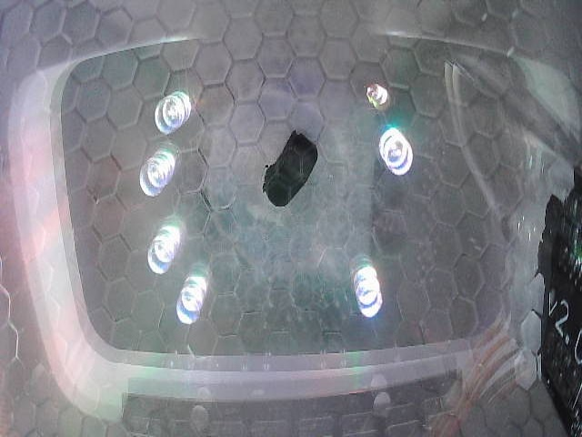

Report 09 · NASA Glenn Research Center, Ohio
2.2 seconds at NASA Glenn
Three drops at the NASA Glenn 2.2-Second Drop Tower turn the bench-top capillary data into a microgravity result. This page shows them frame by frame.
| Facility | NASA Glenn 2.2-Second Drop Tower |
|---|---|
| Drops | 3 (plus a dry-run baseline) |
| Window | 2.2 s per drop |
| Local rig | 14 ft, ~0.9 s free-fall |
1The facility
The NASA Glenn 2.2-Second Drop Tower is a NASA Glenn Research Center test facility in Ohio that produces about 2.2 seconds of microgravity per drop. A sealed experiment package is released down a vertical chamber and falls freely for the full window while cameras and sensors record what happens inside.
Not the ZGRFNASA Glenn also operates the 5.18-second Zero Gravity Research Facility, a separate and larger drop tower. HexaFlow did not test there.For HexaFlow, that window is long enough to watch dyed water move through the hex lattice the way it would in orbit, not the way it moves on a lab bench. HexaFlow ran 3 drops. The results here come from those runs, plus the local 14-foot classroom rig that prepared the team to go to Ohio.
| Facility | NASA Glenn 2.2-Second Drop Tower |
|---|---|
| Location | NASA Glenn Research Center, Ohio |
| Microgravity window | 2.2 s |
| Drops run | 3 |
| Local rig height | 14 ft (4.267 m) |
| Local rig free-fall | ~0.9 s |
2Method
We drop the TDC module from 14 feet, about 0.9 seconds of free-fall per drop, a stand-in for NASA Glenn’s 2.2-second drop tower, which we tested in Ohio. Even in that short window we can watch how water actually moves through the channels.
Before each drop we add about 5 mL of dyed water to the TDC center and seal the injector hole. Calipers measure the dispersal pattern before and after, so every run is compared against its own baseline.
NoteBetween runs, compressed air clears the channels so each test starts clean.In weightlessness, water should climb upward into the channels by capillary action, reaching and hydrating the roots.
3The drops, frame by frame
Scroll to step through the 18 frames of the run you select. The captions change as the drop progresses.
NoteFrames are evenly sampled from the Glenn footage. The timestamp assumes even spacing across the 2.2 s window, so read it as indicative.
Drop 1 and Drop 3 shown. Drop 2: the hexagons were cleaned out before this drop.
3.1Drop log
-
Drop 1best
Full system, best dispersal
The whole HexaFlow assembly ran as designed: sealed module, dyed water in the TDC center, hex lattice in place. This first drop produced the best capillary dispersal of the three.
-
Drop 2cleaned
Hexagons cleaned out
Before this drop the hexagons were cleaned out, so the channels started dry and empty. The dispersal here is the clean-lattice baseline.
-
Drop 3double water
Double water
Water was left in the system because the code that sequences the drops could not be changed between runs. Leaving the water in was the only way to get more water into the module for the final drop.
4Results
The headline numbers come from the local 14-foot rig, where the team could run enough drops to build a statistical baseline. The Glenn drops validate the geometry in real microgravity. Mean capillary movement rose from roughly 9.9 mm in the first suite to 14.7 mm after the module was revised, an improvement of about 48%.
| Quantity | Value | Basis |
|---|---|---|
| Mean capillary rise | 14.7 mm | Suite B, 9-drop baseline, 14-ft local rig |
| Suite A mean (pre-revision) | 9.9 mm | First 6-drop suite, before the module was revised |
| Minimum rise observed | 4.28 mm | Low end of the Suite B spread |
| Maximum rise observed | 31.79 mm | High end of the Suite B spread |
| Improvement between revisions | ~48% | Suite A to Suite B, mean rise |
| Saturated channel capacity | 10.12 mL | Fully saturated lattice |
| Channel width | 0.48 mm | 0.020 in gap |
| Local drop height | 14 ft | 4.267 m |
| Local free-fall per drop | ~0.9 s | 14-ft classroom rig |
| NASA Glenn window | 2.2 s | NASA Glenn 2.2-Second Drop Tower |
| Dyed water per drop | ≈ 5 mL | Added to the TDC center, injector sealed |
| Local baseline drops | 9 | Baseline suites, local rig |
| Expected result | No free droplets: water climbs into the channels by capillary action. Design target in microgravity. | |
Per-drop before/after channel measurements were recorded for all nine local runs. The full dataset and analysis are held with the CDR test documentation.


5A ladder of approximations
At Preliminary Design Review, peer teams raised the objection that has shaped every test since: wicking may not behave in microgravity the way it behaves in a classroom. There is no way around that from a school workshop, so the team built a ladder of approximations. Each rung can falsify a different assumption. None of them can prove flight readiness.
- 01
Inversion, static retention
The module was turned upside down and shaken with substrate, covers and a planted stem in place. Nothing fell out. This tests whether the channels can hold water against gravity. It says nothing about how water moves in free-fall.
- 02
The first flow test, where 1 g wins
Water was run into the dome and tracked as it climbed. It travelled roughly halfway up the sides before gravity overpowered the capillary forces and it stopped. That halfway mark is a 1 g result, not a failure.
- 03
Free-fall, 14 feet, about 0.9 seconds
Dropping the sealed module produces real, if brief, weightlessness. Two suites were run: six drops first, then nine more after the module was revised. Mean capillary movement rose from roughly 9.9 mm to 14.7 mm. The spread across the nine ran from 4.28 mm to 31.79 mm.
- 04
NASA Glenn, 2.2 seconds
The NASA Glenn 2.2-Second Drop Tower gives a longer free-fall window than the 14-foot drop, under instrumented conditions. Three drops were run at the NASA Glenn Research Center in Ohio.
What the team can say today: the geometry holds water when inverted, moves it measurably in free-fall, and improved by about 48% between revisions.